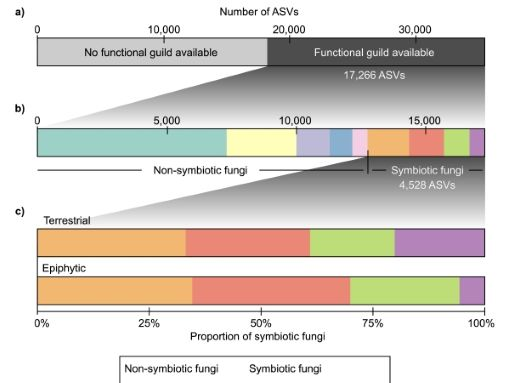
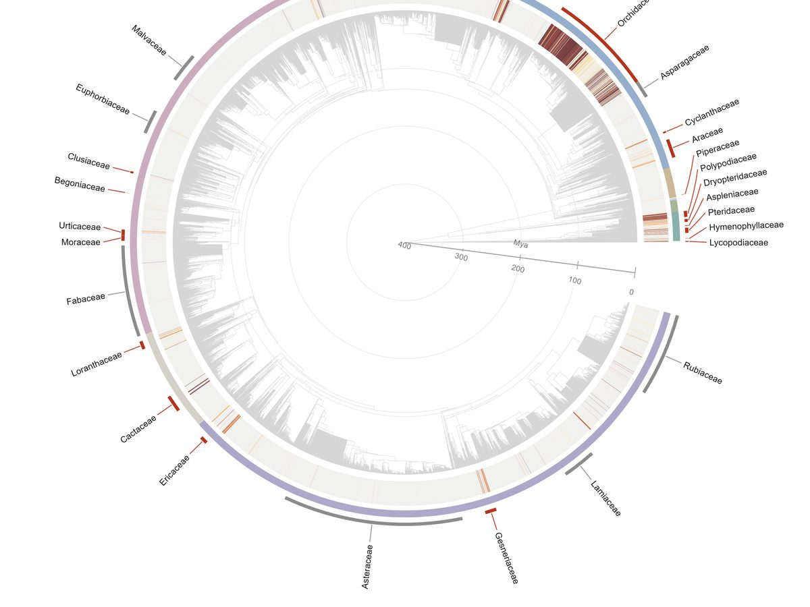

Biodiversity patterns & evolution
Highlighted past, present and future research

Published · Ecography, 2022
Megafrugivores as fading shadows of the past
Do Madagascar's extinct giant lemurs and elephant birds still shape teh current distribution of palms today? Their signature is there — but living frugivores and the environment matter more.

Soon in Annals of Botany
Host identity outweighs substrate use in structuring root-associated fungal communities in a neotropical rainforest
Sampling roots from epiphytic and terrestrial individuals across four plant families in a Peruvian cloud forest, we found that which fungi colonise a root depends far more on the host plant's identity than on whether that plant roots in the canopy or in the ground.

In preparation
The evolution of epiphytism across the plant tree of life
Epiphytism — living rooted on another plant rather than in soil — has evolved independently again and again, from ferns to orchids. We're mapping where and how often, across a genus-level phylogeny spanning nearly 12,000 vascular plant lineages.
Published with GitHub Pages